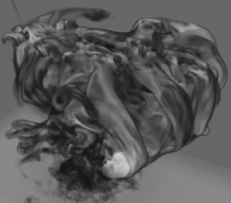
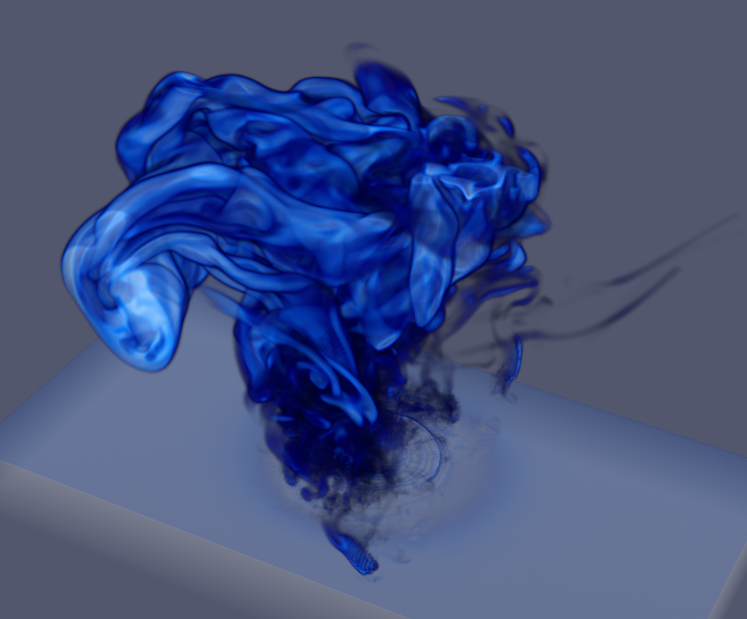

Cinema Overview
Cinema - A Database Approach to Extreme Scale Visualization and Analysis.


The Databases:
Cinema represents a novel database approach to in-situ and post-processing scientific workflow that facilitates exploration, visualization, and analysis of both simulation and experimental data. A Cinema Database consists of data artifacts. Data artifacts can encompass a range of possibilities -- metadata such as run parameters; output variables, derived values, or images. This database model supports multiple use cases:
- Searching/querying of metadata and data artifacts. Samples can be searched on metadata, content, position, time, or a combination of all of these.
- Real-time interactive visualization of sets of data artifacts.
- Playing interactive visualization, allowing the user on/off control of elements within the visualization.
An important design philosophy of Cinema is that applications reading a Cinema database can ignore data artifacts, read subsets of channels, and otherwise determine which operations to perform.
Work with Viewers:
The foundation of Cinema is database specifications that provide a way for common data to be written and read by any application. A Cinema viewer is an application designed to interact with a Cinema database. We provide reference implementations of viewers on the Downloads page , but these are by no means intended to be the only applications within the Cinema community. Cinema is designed with the flexibility needed for the user to adapt it to the specific workflow.